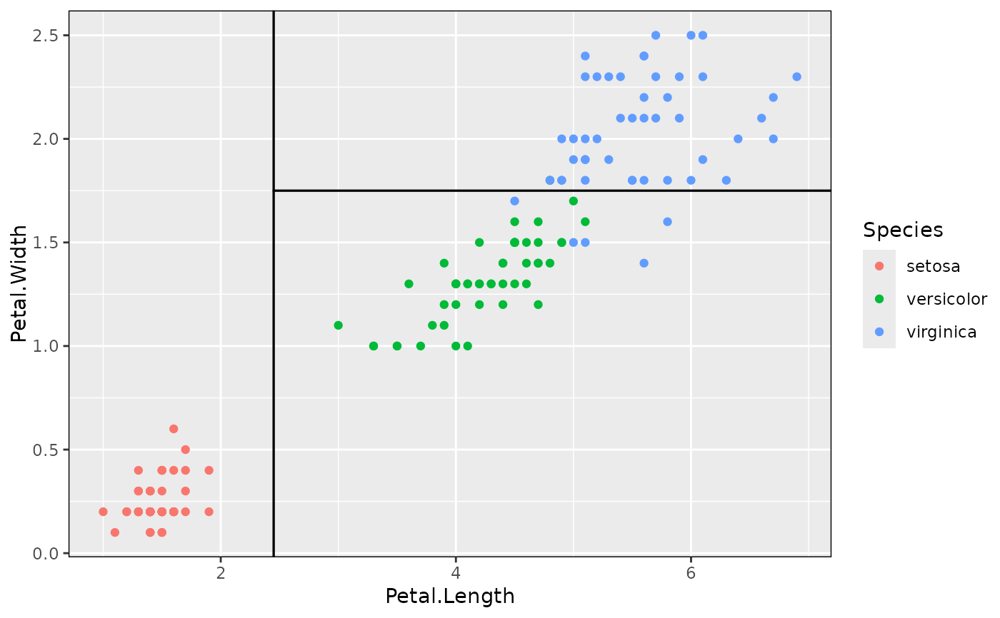
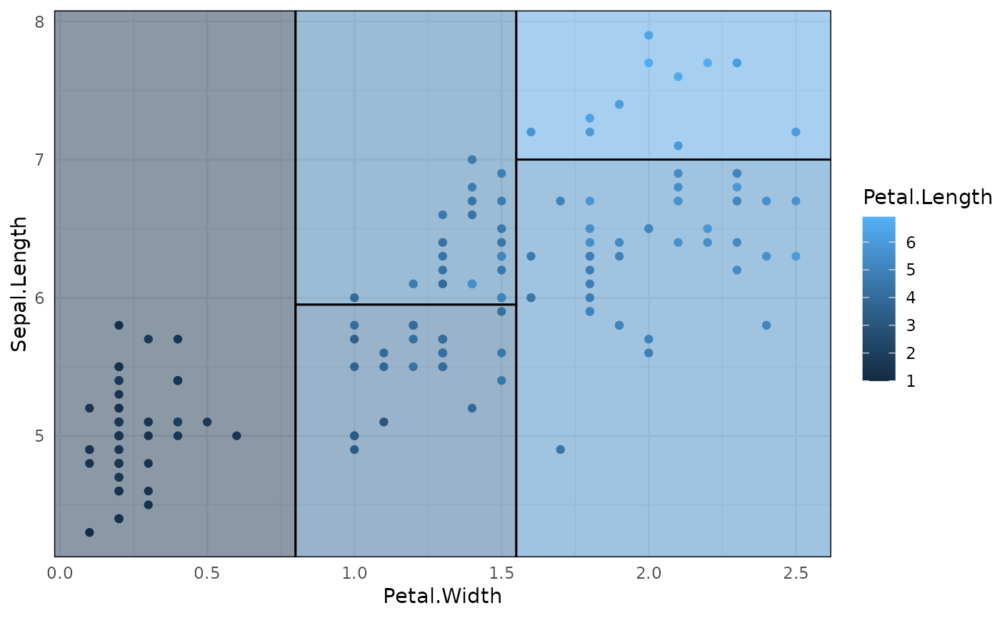
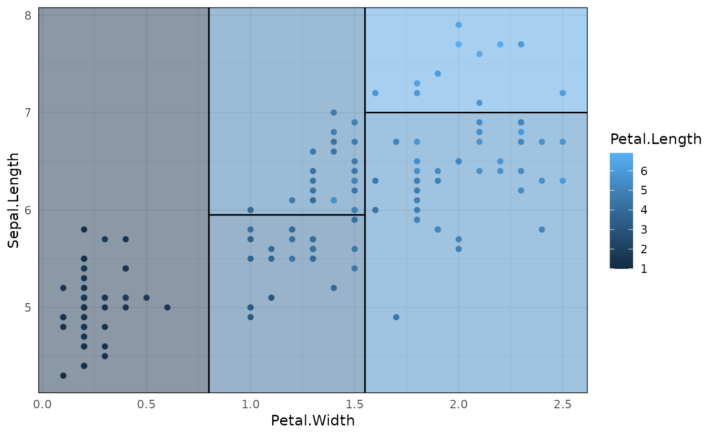

geom_parttree() is a simple extension of
ggplot2::geom_rect()that first calls
parttree() to convert the inputted tree object into an
amenable data frame.
Usage
geom_parttree(
mapping = NULL,
data = NULL,
stat = "identity",
position = "identity",
linejoin = "mitre",
na.rm = FALSE,
show.legend = NA,
inherit.aes = TRUE,
flipaxes = FALSE,
...
)Arguments
- mapping
Set of aesthetic mappings created by
aes(). If specified andinherit.aes = TRUE(the default), it is combined with the default mapping at the top level of the plot. You must supplymappingif there is no plot mapping.- data
An rpart::rpart.object or an object of compatible type (e.g. a decision tree constructed via the
partykit,tidymodels, ormlr3front-ends).- stat
The statistical transformation to use on the data for this layer, either as a
ggprotoGeomsubclass or as a string naming the stat stripped of thestat_prefix (e.g."count"rather than"stat_count")- position
Position adjustment, either as a string naming the adjustment (e.g.
"jitter"to useposition_jitter), or the result of a call to a position adjustment function. Use the latter if you need to change the settings of the adjustment.- linejoin
Line join style (round, mitre, bevel).
- na.rm
If
FALSE, the default, missing values are removed with a warning. IfTRUE, missing values are silently removed.- show.legend
logical. Should this layer be included in the legends?
NA, the default, includes if any aesthetics are mapped.FALSEnever includes, andTRUEalways includes. It can also be a named logical vector to finely select the aesthetics to display.- inherit.aes
If
FALSE, overrides the default aesthetics, rather than combining with them. This is most useful for helper functions that define both data and aesthetics and shouldn't inherit behaviour from the default plot specification, e.g.borders().- flipaxes
Logical. By default, the "x" and "y" axes variables for plotting are determined by the first split in the tree. This can cause plot orientation mismatches depending on how users specify the other layers of their plot. Setting to
TRUEwill flip the "x" and "y" variables for thegeom_parttreelayer.- ...
Other arguments passed on to
layer(). These are often aesthetics, used to set an aesthetic to a fixed value, likecolour = "red"orsize = 3. They may also be parameters to the paired geom/stat.
Details
Because of the way that ggplot2 validates inputs and assembles
plot layers, note that the data input for geom_parttree() (i.e. decision
tree object) must assigned in the layer itself; not in the initialising
ggplot2::ggplot() call. See Examples.
Aesthetics
geom_parttree() aims to "work-out-of-the-box" with minimal input from
the user's side, apart from specifying the data object. This includes taking
care of the data transformation in a way that, generally, produces optimal
corner coordinates for each partition (i.e. xmin, xmax, ymin, and
ymax). However, it also understands the following aesthetics that users
may choose to specify manually:
fill(particularly encouraged, since this will provide a visual cue regarding the prediction in each partition region)colouralphalinetypesize
Examples
library(rpart)
### Simple decision tree (max of two predictor variables)
iris_tree = rpart(Species ~ Petal.Length + Petal.Width, data=iris)
## Plot with original iris data only
p = ggplot(data = iris, aes(x = Petal.Length, y = Petal.Width)) +
geom_point(aes(col = Species))
## Add tree partitions to the plot (borders only)
p + geom_parttree(data = iris_tree)

## Better to use fill and highlight predictions
p + geom_parttree(data = iris_tree, aes(fill = Species), alpha=0.1)
 ## To drop the black border lines (i.e. fill only)
p + geom_parttree(data = iris_tree, aes(fill = Species), col = NA, alpha = 0.1)
## To drop the black border lines (i.e. fill only)
p + geom_parttree(data = iris_tree, aes(fill = Species), col = NA, alpha = 0.1)
 ### Example with plot orientation mismatch
p2 = ggplot(iris, aes(x=Petal.Width, y=Petal.Length)) +
geom_point(aes(col=Species))
## Oops
p2 + geom_parttree(data = iris_tree, aes(fill=Species), alpha = 0.1)
## Fix with 'flipaxes = TRUE'
p2 + geom_parttree(data = iris_tree, aes(fill=Species), alpha = 0.1, flipaxes = TRUE)
### Example with plot orientation mismatch
p2 = ggplot(iris, aes(x=Petal.Width, y=Petal.Length)) +
geom_point(aes(col=Species))
## Oops
p2 + geom_parttree(data = iris_tree, aes(fill=Species), alpha = 0.1)
## Fix with 'flipaxes = TRUE'
p2 + geom_parttree(data = iris_tree, aes(fill=Species), alpha = 0.1, flipaxes = TRUE)
 ### Various front-end frameworks are also supported, e.g.:
library(parsnip)
iris_tree_parsnip =
decision_tree() %>%
set_engine("rpart") %>%
set_mode("classification") %>%
fit(Species ~ Petal.Length + Petal.Width, data=iris)
p + geom_parttree(data = iris_tree_parsnip, aes(fill=Species), alpha = 0.1)
### Various front-end frameworks are also supported, e.g.:
library(parsnip)
iris_tree_parsnip =
decision_tree() %>%
set_engine("rpart") %>%
set_mode("classification") %>%
fit(Species ~ Petal.Length + Petal.Width, data=iris)
p + geom_parttree(data = iris_tree_parsnip, aes(fill=Species), alpha = 0.1)
 ### Trees with continuous independent variables are also supported. But you
### may need to adjust (or switch off) the fill legend to match the original
### data, e.g.:
iris_tree_cont = rpart(Petal.Length ~ Sepal.Length + Petal.Width, data=iris)
p3 = ggplot(data = iris, aes(x = Petal.Width, y = Sepal.Length)) +
geom_parttree(
data = iris_tree_cont,
aes(fill = Petal.Length), alpha=0.5
) +
geom_point(aes(col = Petal.Length)) +
theme_minimal()
## Legend scales don't quite match here:
p3
### Trees with continuous independent variables are also supported. But you
### may need to adjust (or switch off) the fill legend to match the original
### data, e.g.:
iris_tree_cont = rpart(Petal.Length ~ Sepal.Length + Petal.Width, data=iris)
p3 = ggplot(data = iris, aes(x = Petal.Width, y = Sepal.Length)) +
geom_parttree(
data = iris_tree_cont,
aes(fill = Petal.Length), alpha=0.5
) +
geom_point(aes(col = Petal.Length)) +
theme_minimal()
## Legend scales don't quite match here:
p3
 ## Better to scale fill to the original data
p3 + scale_fill_continuous(limits = range(iris$Petal.Length))

## Better to scale fill to the original data
p3 + scale_fill_continuous(limits = range(iris$Petal.Length))
